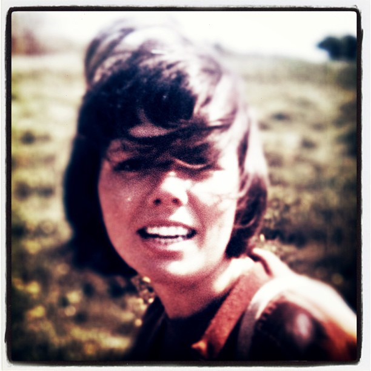
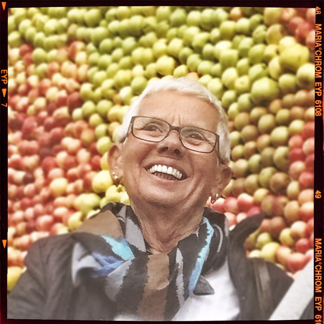

Begravningsgudtjänst i Trons kapell, Limhamn torsdagen den 30 november 2017.
Man valde att spela What a wonderful world - Iam saling - My way
Du har lämnat oss och vi saknar dej. Där är så många minnen av saker vi gjort och alla de tillfällen när du med hela ditt hjärta la ner all energi för att alla dina nära och kära skulle trivas och må bra.
Vår gemensamma uppväxt föregicks på Hospitalsgatan där vi lekte med alla barn det hoppades hage och du lärde dej att hoppa rep. Det förvånar mej att du aldrig blev arg på mej när jag gömde dina leksaker i vedtraven på gården.
Mormor kom ofta på besök och hon hade alltid med sej bullar som bredes med mycket smör och som sedan doppades i varm choklad. Sommartid hyrdes en stuga på Sandvägen i Kämpinge . Vi åkte ofta tillsammans ner till stranden i en pinnavagn det badades och vi fick gå och köpa glass i strandkiosken.
Vi flyttade till Nobelvägen och du gick din skoltid på Rörsjöskolan i en klass enbart för flickor. Ni flickor kastade boll på husvägen och det utväxlades stycken sittande på mattebommen.
Nu fick vi åka till Svenköp sommartid och uppleva lantliv hos Olga och Åke och vi var så hjälpsamma med att hacka i potatisfältet och bära in ägg från alla hönsen. Kärvar skulle ställas i rader när Åke körde med självbindaren och som vi sprang för att det skulle bli ordentligt gjort. Tillåtelse gavs att gå och bada men vid framkomsten fanns det inget vatten i den lilla bassängen. Så vi traskade tillbaka och fick använda en tvättbalja för avsvalkning.
En stuga inköptes i Lomma vid furet. Vi fick hjälpa till att få stugan på plats för varje höst plockades den isär och på våren var det dags att få ihop väggar och tak igen.
Du valde att gå restauranglinje på Malmö Yrkesskolor och du blev en duktig kallskänka och efter examen blev det anställning på hotell Kramers restaurang. Du lockades en sommar till Strömstad där dina kunskaper användes på världshuset Räkan.
Det är så många kalas där man har fått njuta av dina delikata måltider.
Sen kom det tre härliga pojkar som man fick glädjen att busa med och föjla genom livet.
Din bror
I natt gick min mor bort. Älskad och saknad av så många. Jag och mina syskon har haft tur att få ha en sån fantastisk morsa. Kampen mot sjukdomen blev henne tyvärr övermäktig. Sorgen är priset för kärleken.
I natt lämnade världens bästa mamma oss.Du var alltid glad och hjälpsam mot alla i Din omgivning, älskad av alla. Du lyckades alltid att prioritera Dina barn och barnbarn och få var och en av oss att känna sig speciell, sedd och hörd. Du var den mest kompletta människa jag mött, Du var allt igenom god, kärleksfull och ärlig. Du kämpade ända in i slutet, vila i frid mamma. Älskar Dig i evighet.